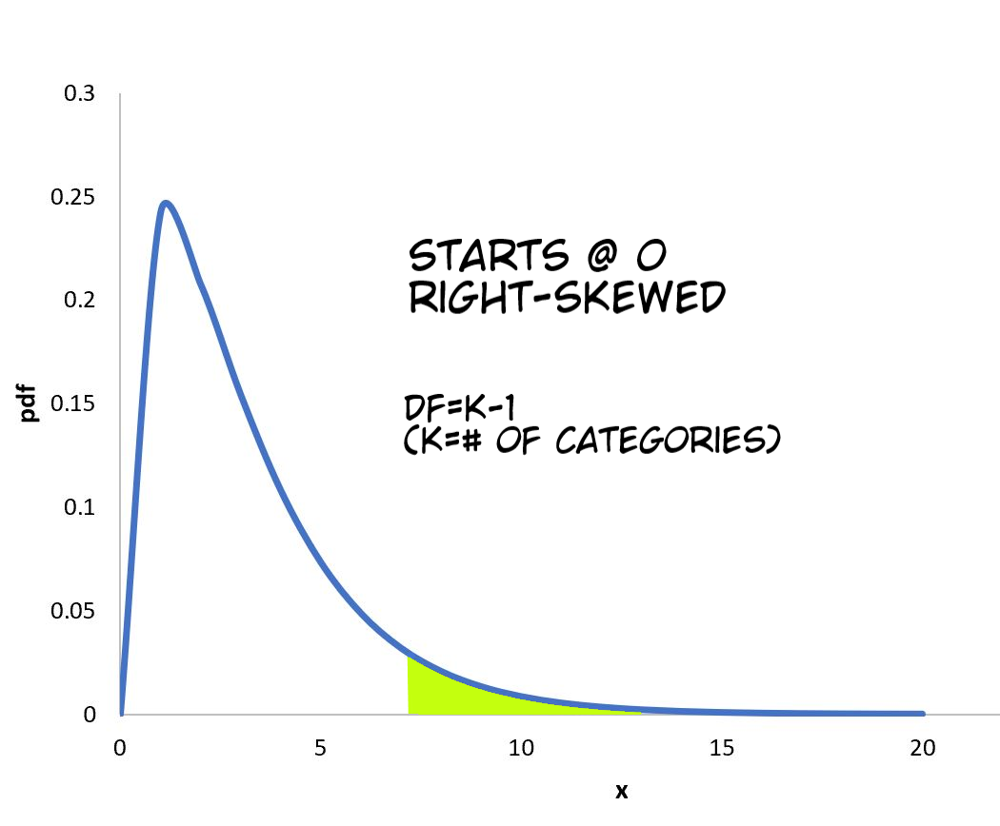
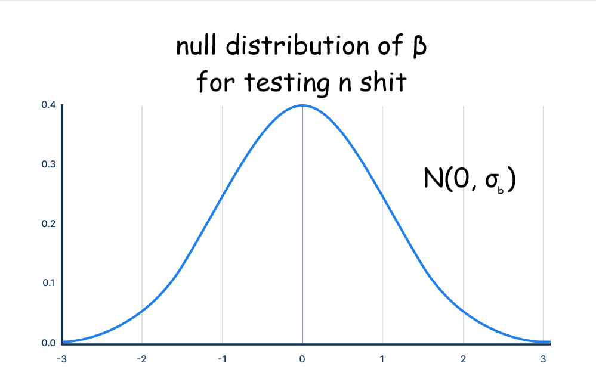

this test is used to compare categorical distributions and see how likely it is you got one by sampling from the other
\(H_0\): the claimed distr [ctx] is true
\(H_a\): the claimed distr [ctx] isn't true
here, O is the observed value & E is the expected value for each category
then use chi squared cdf on your calculator w/ df = (# of categories) - 1
to get the final p-value
here's what shit looks like
lime green area is what you shade & calculate the area of to get the p-value
be sure to indicate the df
personally i also like to indicate where 0 is, but who knows
\(H_0\): there's no diff in the [categorical var] distr between [pop 1] & [pop 2]
\(H_a\): there is a diff in yeah yeah we fucking get it
conditions are basically the same, just a couple of things that make this different from the last one
\(H_0\): there isn't an assoc. between var 1 & var 2 \(H_a\): there is one
so if we want to predict a correlation between two variables, this is the true equation- "god's equation", if you will: \[\mu_y=\alpha+\beta x\]
but of course, we are pathetically limited in our ability to predict it- the best we can do is a: \[\hat{y}=a+bx\]
here's a table comparing the stat (what we predict) vs the parameter (the actual parameter irl set by god)
| stat | parameter | |
| y-intercept | a | \(\alpha\) |
| slope | b | \(\beta\) |
| residual SD | s | \(\sigma\) |
| slope SD | \(\text{SE}_b\) | \(\sigma_b\) |
due to some stat fuckery, the distribution of all possible slopes takes on a normal distribution with mean \(\beta\) and stdev \(\sigma_b\) (which we use \(\text{SE}_b\) to approximate)
if you wanna do a hypo test, set the mean to be 0 & go from there
OH MY FUCKING GOD HOW MANY 4-STEP PROCESSES ARE THERE 老子他妈要吐了
param: \(\beta\) is the true slope of the population lsrl for [x-ctx] and [y-ctx]
also confidence level
name: 1-sample t-interval for slope
formula is p simple: \(b \pm t^* \cdot \text{SE}_b\)
in this case, df = n - 2 bc there's 2 unknown variables? bro idfk
for \(\text{SE}_b\) they usually give you it but just in case liu feels especially sadistic on test day:
fuck you
ok the test is basically the same, just remember to use the t-distr bc we don't know true \(\sigma\)
\(\beta\)= true slope of population lsrl for x = [x ctx] and y = [y ctx]
null hypothesis is \(\beta=0\)
alt is less than, greater than, or not equal to 0, pretty standard shit
formula is shockingly simple, it's just \(\frac{b-\beta}{\text{SE}_b}\)
then you use \(\text{tcdf}\) (remember to draw the picture!!) and you have the p-value
lmao